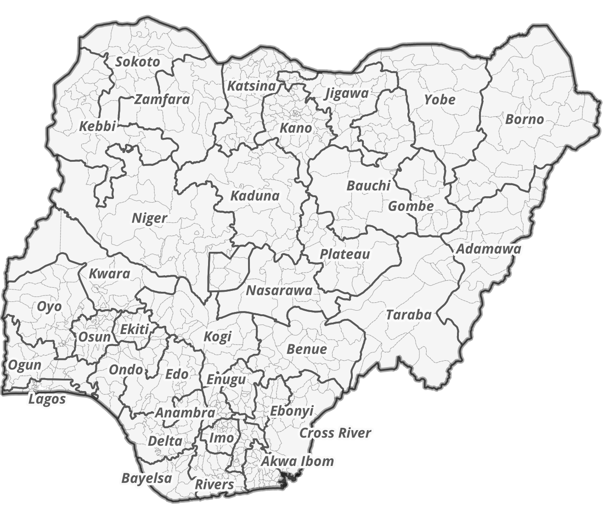
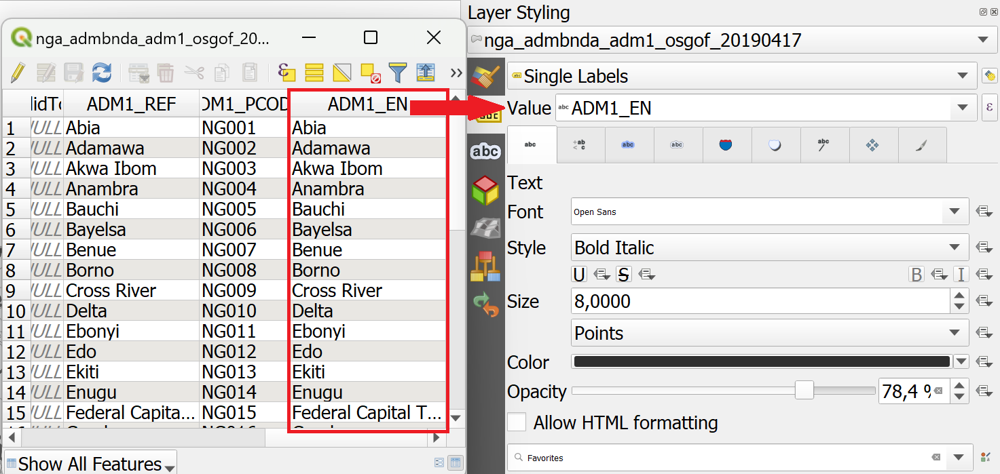
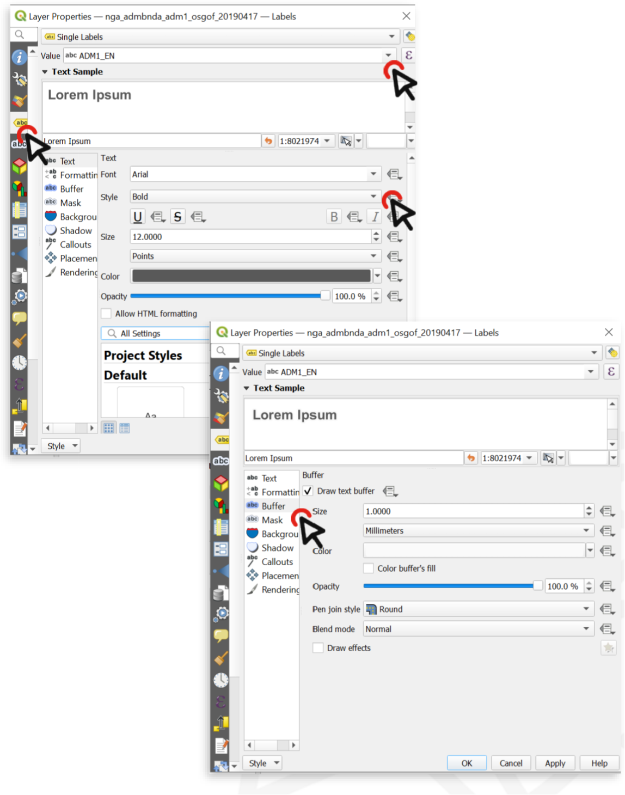
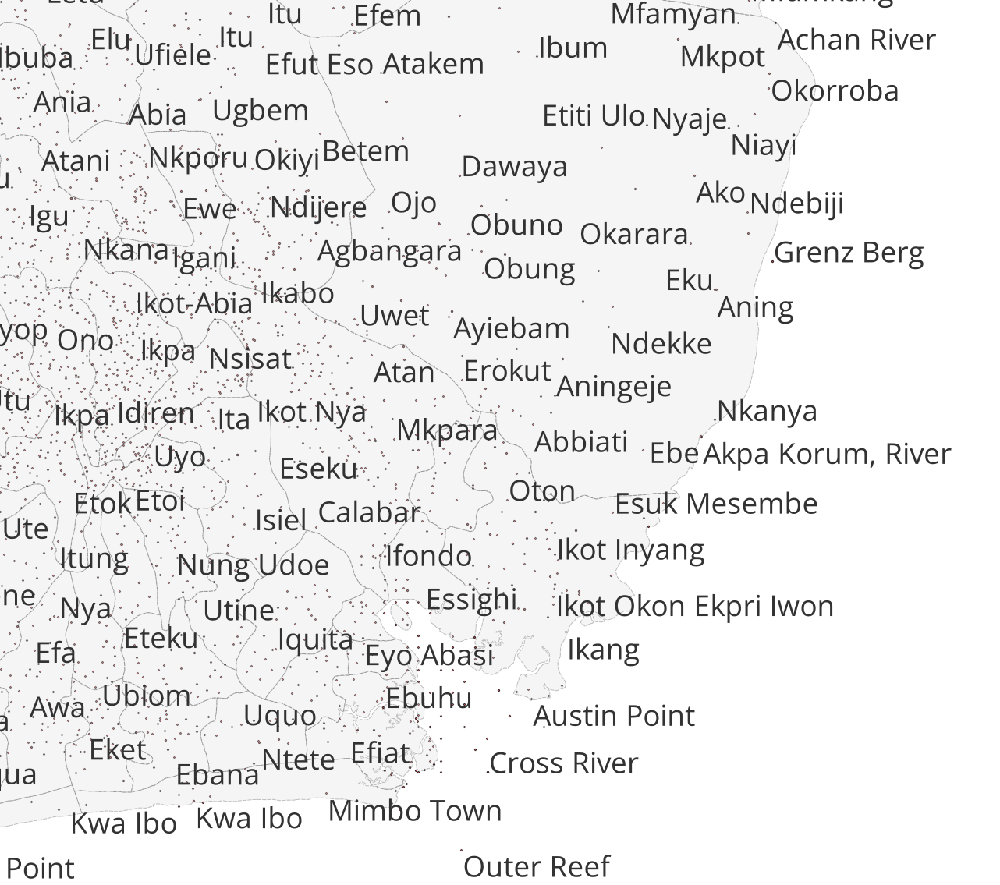
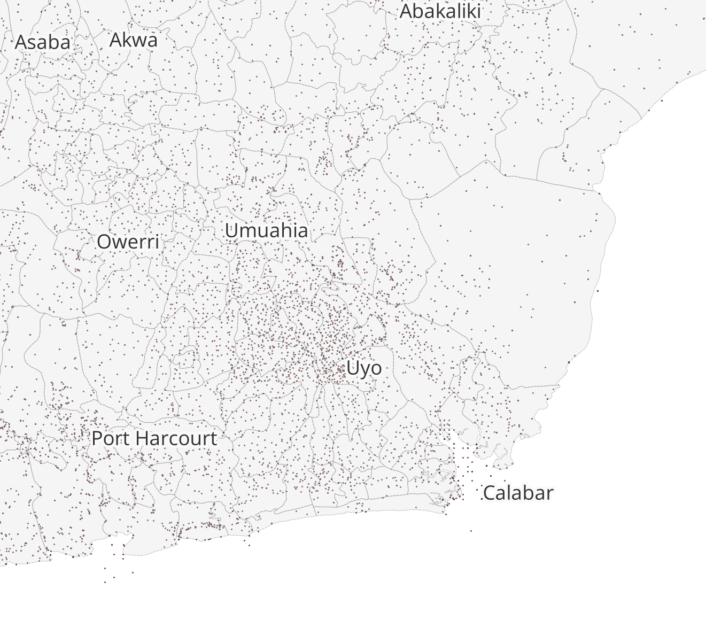
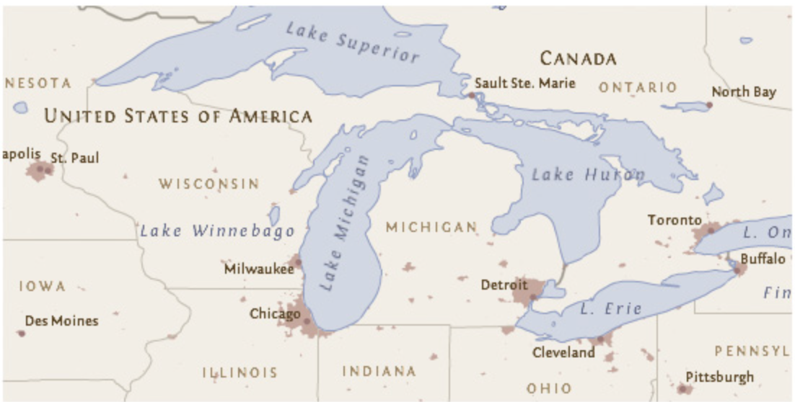
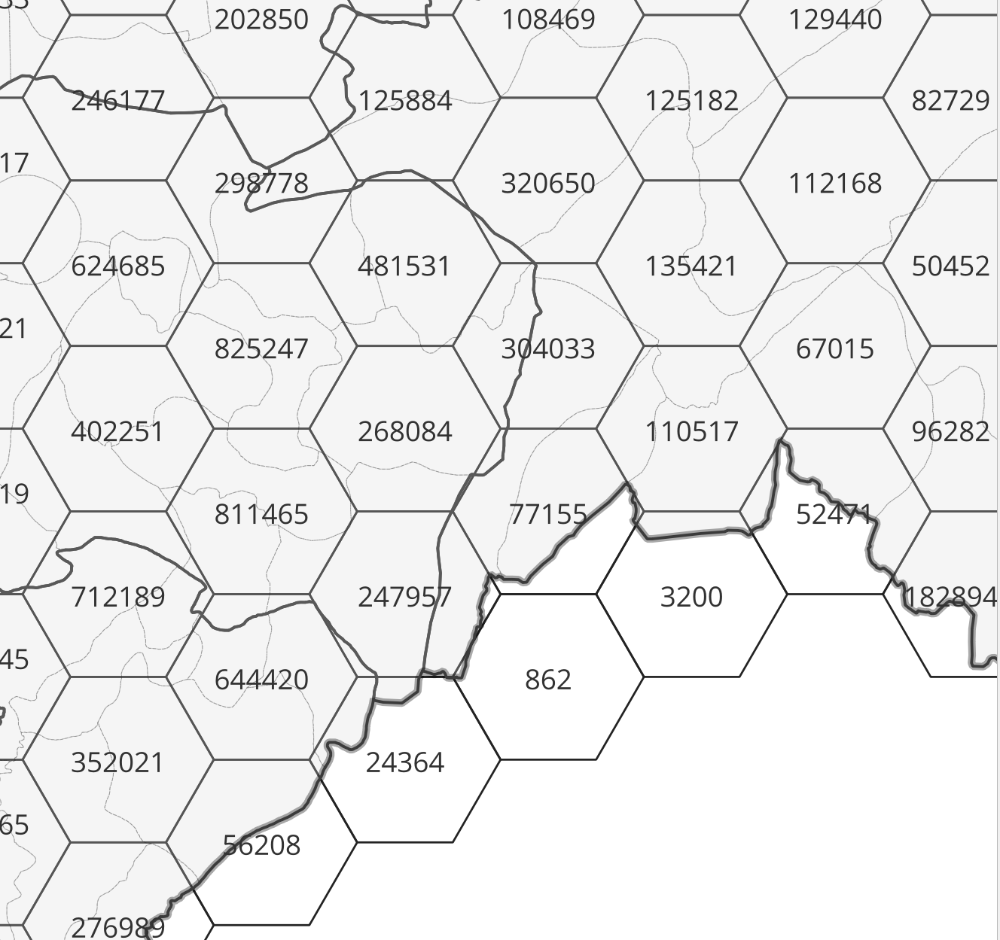
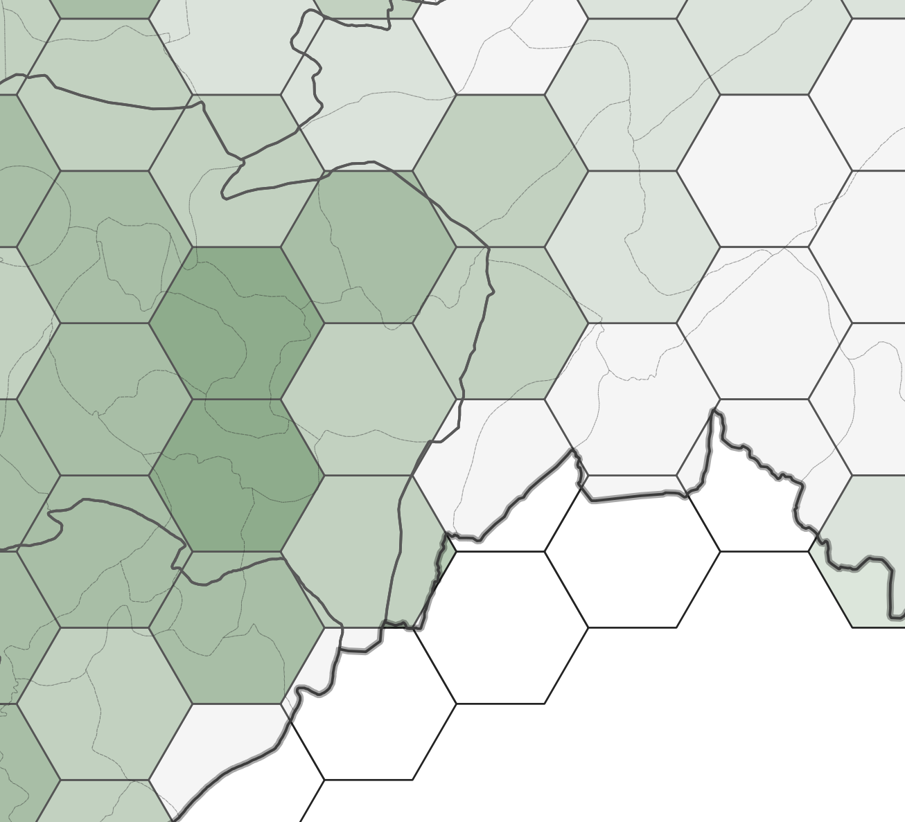
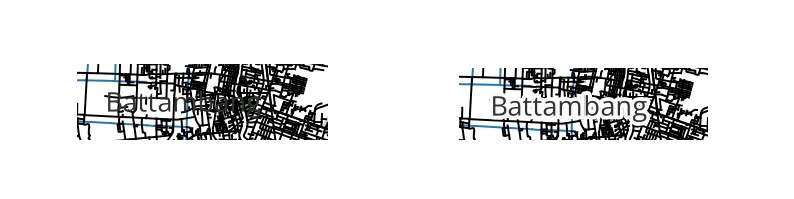

4.3. Labels for Vector Data#
Labels are text that display information or values of the data. In QGIS, you can either select Single Labels or
Rule-based Labelling. For each option, an attribute (value) will be displayed on the map. For example, the
name of a city or region. Additionally, you can change the font, font size, colour and some other styling options
for the label text. When you create a map, you can add labels to help your reader understand the map quickly. However,
be aware that too much text information can overload the map with too much information for the reader to process.
4.3.1. Single Labels and Rule-based Labeling#
QGIS offers two methods to display labels: Single Labels and Rule-based Labeling
4.3.1.1. Single Labels#
Creates a single label style for every feature in the layer. You can select an attribute (value) which will be displayed. For example, the name of a settlement. You need to know which attribute displays the information you want to display. Look at the attribute table of the dataset to find it out.
{kind=link}

Fig. 4.31 Single labels for each administrative region (adm1) in Nigeria. The reader is able to assign each label to the respective administrative entity.#
{kind=link}

Fig. 4.32 Assigning the correct attribute value in the labeling options. QGIS needs to know which attribute (column) of the attribute table should be displayed as a label. In this case, we want the name of the administrative region (ADM1_EN) to be displayed.#
4.3.1.2. Adding Single Labels to a Layer#
In the styling panel, click on the
Labels-tab underneath the Symbology tab.Select
Single labels.Valueis where you choose the attribute that will be displayed as a label. For example*ADM1_EN*will display the English names of Nigerian states for each feature in the data set.Let’s change the font: Open the font dropdown menu and select Arial. Make the text
Boldin the Style dropdown menu. Change the colour by clicking onColour, and change theSizeto 8 ptLet’s add a white buffer around the label. In the
Labelstab, you will find a list with different options to style the labels. Right now, we are in theTextmenu. SelectBufferand check theDraw text bufferoption. This will make the labels stand out more on dark or crowded maps.Click
ApplyandOK.
{kind=link}

Fig. 4.33 Setting up labels in QGIS 30.30.2#
Attention
Single Labels are not always useful. For example, if the dataset is too big, or you only want to display certain features in the dataset. In the example below, there are too many settlements to display labels for each settlement. Instead, it might be useful to only display the regional and national capitals. For such a use case, Rule-based Labeling is ideal.
{kind=link}

Fig. 4.34 Single Labels were selected to display the names of the settlements (red dots). A map with so much text information is unreadable and the information can hardly be understood.#
4.3.1.3. Rule-based Labelling#
Create rules using expressions to select accurately which features are to be labeled. Each rule can have a different text formatting. Use this if you want to have more control over the information that will be displayed as labels. For example, you can filter your data to only display the names of regional capitals.
{kind=link}

Fig. 4.35 Rule-based labeling allows you to filter datasets. This way, you can display the labels only for selected features without altering the dataset.#
The rules, or filters, are based on an expression. You can use the Expression string builder to the right of the Filter option in the label panel.
4.3.1.4. Adding Rule-based Labels to a Layer#
In the styling panel, click on the
Labelstab underneath the Symbology tab.Select

Rule-based Labeling.Add a Rule by clicking on the
+-button in the left corner of the styling panel. A new window will open in the styling panel. In this window, you will enter the rule (Filter) and customize the label font, size, and placement. Additionally, you can enter a description.Enter a Filter (red box in the figure below). The easiest way is to use the
Expression string builderto the right of the Filter option. Click on the -Symbol. A new panel will open.
-Symbol. A new panel will open.In the Expression String builder enter a rule. In the example in the video below, we want to only display settlements that are either national or regional capitals. This corresponds to the String
("CLASS" = 1 ) OR ("CLASS" = 2). We know this because we know our data and have looked at the attribute table beforehand.Click
OKSet the font and font size.
Click
Apply.
Note
To add rules to your labels, you need to be familiar with your data! Look at the metadata (in the properties or at the source) and take a look at the attribute table. Think about what the different columns mean and identify the attributes. This might not always be easy, as they might have abbreviated names, but as you work more with data, this will become easier.
Below are some further considerations to keep in mind when using labels:
Only display information that serves the purpose of the map or is helpful to the reader. Useful information can be the name of a settlement or a place, so the reader can assign a certain symbol on the map to this particular place.
If you want to display different types of information as labels, the font needs to be different so the reader can differentiate between the different types of information that is displayed. A good practice is to display the labels in a similar colour to the objects it is referring to. For example, dark blue text for the labels of light blue bodies of water, or brown text for the labels of light-brown houses.
{kind=link}

Fig. 4.36 A good example of label placement and font. Pay attention to the text colours and orientation. Every label can easily be attributed to the correct cartographic feature. (Source: Axis Maps)#
Attention
In most cases, displaying numerical values as labels is confusing to the reader and makes the map too complex. In most cases, for numerical data, you can choose a different visualization such as colours or symbol size.

Fig. 4.37 Numerical Labels#

Fig. 4.38 Graduated Symbology#
QGIS places the labels automatically. Sometimes, if you are using a lot of black outlines or dark colours, black text is hard to read on the map. In that case, you can add white buffer around the text to make it visible.
{kind=link}

Fig. 4.39 A label without a text buffer (left) and a label with a white text buffer (right)#
Note
QGIS renders labels automatically.
Sometimes labels can obstruct other symbols. In that case, you can either adjust the placement of the labels in the Label tab, or use the Move a Label, Diagram, or Callout-tool in Label toolbar
By default, QGIS renders the labels so that they don’t overlap with other labels. This means that not all the labels will be visible if the data is dense or rendered close to each other. You can optimize the rendering under the rendering option.
Attention
Check out the wiki article for detailed, step-by-step tutorials on how to use the different features of the styling panel.
You can also read further in the article “Labeling and text hierarchy in cartography” by Axis Maps.
4.3.2. Self-Assessment Questions#
Test your knowledge
When using Single Labels, what must you choose in order for labels to be displayed (i.e. what does “Value” refer to)?
Answer
In Single Labels mode, you must pick an attribute field (column) from the layer whose values will be shown as the labels. This is called the Value field. For example, you can choose the column storing the name of a street to display streetnames on your map.
You can also use an expression instead of a simple field, e.g. concatenate multiple fields or include functions, to build what the label shows.
What is a “rule” in rule‑based labeling, and how do you build one (e.g. using expressions)?
Answer
A rule in rule‑based labeling is a condition (filter) that determines which features get labeled under that rule, and optionally with particular styling. Each rule can have its own label style (font, size etc.)
To build a rule: in the layer’s Label properties, select Rule‑based labeling. Then add a new rule, give it a description, and set a filter expression (using the expression builder) that tests some attribute(s) (and optionally scale, visibility etc.). Only features satisfying the expression are labeled under that rule.
Why might you prefer rule‑based labeling instead of labeling every feature (using Single Labels)? Give an example scenario.
Answer
Rule‑based labeling lets you label selectively (only some features, e.g. only major roads, only capital cities, or features above a certain size), avoiding clutter.
It also lets you vary label styling per rule (different font size, color, style) depending on the feature’s attribute or scale.
Example scenario: Suppose you have a map of cities, and you want to label only large cities (population > 100,000) with their names in big bold font, medium cities in smaller font, and omit very small towns to reduce crowding. You can make rules like “population” > 100000, 10000 < “population” <= 100000, etc. Each rule labels only those features, styled appropriately. This avoids labeling every little town which could overlap and clutter.
Why is it generally discouraged to label numerical (continuous) values directly as text labels?
Answer
Continuous numerical values (e.g. precise counts, measurements) tend to produce too many unique labels, which can clutter the map or overlap, making it hard to read.
They often change continuously, so small changes (minor precision) may not be useful and can overwhelm the labeling.
Also, continuous values are better represented via graded visual variables (e.g. graduated color, size, or choropleth) rather than text, so viewers perceive relative magnitude more naturally.